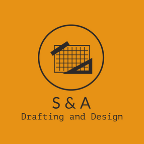
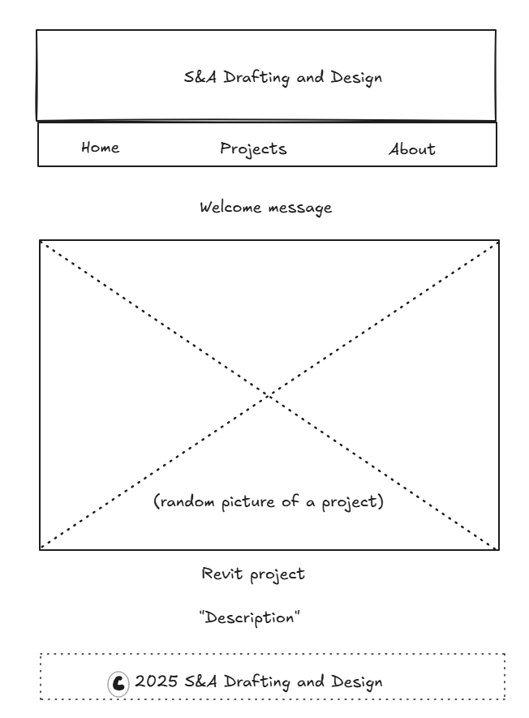
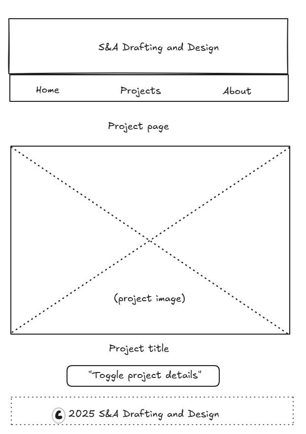

Overview
Purpose
The purpose of this is to show my archictectual and structural drafting work created using Revit. I will serve as an oline portfolio for ptential employers
Audience
The audience include architectural firms, engineering consultants, recruiters, any firm s like that looking for drafter or Revit specialists.
Dynamic elements
Javascrip
- Display a feature project on hte home page
- filter protfolio proejects by category strcutur , nd architectural
- toggle project details in a model pop up
Branding
Website Logo
Style Guide
Color Palette
Palette URL: https://coolors.co/4a5a48-f6f2e8-c5a777-8a9776-333333Typography
Heading Font: Montserrat
Paragraph Font: Open Sans
Normal paragraph example
I am a Revit drafter with over 6 years of experience in hotel plans, water infrastructure, and structural modeling. My portfolio shows real working projects and 3D families created in Revit.
Colored paragraph example
I specialize in creating clean, buidable models and drafting views that match construction requirements.
Navigation
Content
Home page
The home page introduces the business and shows a featured Revit project with a large image and description. It also has a short welcome message and navigation to the Proejcts and About pages.
Projects
A grid of projects showing Revit screenshots with titles, tag (like "structural" or "Hotel Plan"), and expandable modals for more details.
Wireframes
Create two wireframes for your site. One for each page and list them here
Home
Hero section with company name and welcome message. A large "Featured Project" section below. Clean layout using grid/flexbox.
Projects
A card layout or grid displaying multiple project images. Each card has a title, tag, and a "View Details" button that opens a modal
